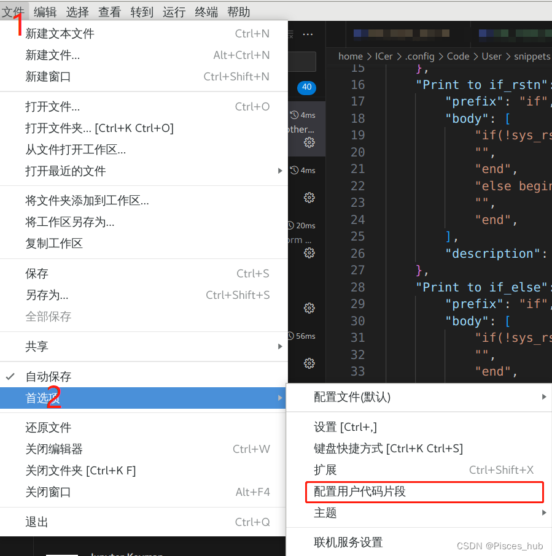
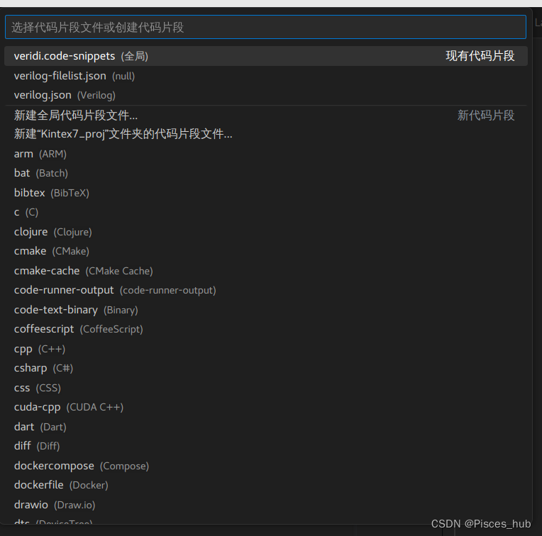

Vscode-Verilog
介绍如何使用Vscode来快速编辑verilog代码
背景：verilog中很多重复的结构和语句，针对此情况现有的插件代码补全太少了，所以出此文编写自定义代码块，拒绝重复编写同结构的代码，同结构代码自定义代码模板。
1.Vscode安装
2. IC代码插件推荐：
- Verilog
- Verilog Format
- Verilog HDL
- Verilog_Testbench
- Verilog-HDL/SystemVerilog/Bluespec SystemVerilog
- TCL Language Support
- Verilog Snippet
- Makefile Tools
- Error Lens（其他代码检查报错可以装这个！但还没有探索到检查verilog的）
尽量的都安装吧，反正没多大的坏处。
3.IC的module模板：
主要包含日常新建module、新建if、新建always、新建ifelse等语句的自动补全
 然后选择所需要设置的代码类型：我用的是verilog.json（应该是某个插件的配置代码）  verilog.json文件内容：
{
// Place your snippets for verilog here. Each snippet is defined under a snippet name and has a prefix, body and
// description. The prefix is what is used to trigger the snippet and the body will be expanded and inserted. Possible variables are:
// $1, $2 for tab stops, $0 for the final cursor position, and ${1:label}, ${2:another} for placeholders. Placeholders with the
// same ids are connected.
// Example:
// always
"Print to always": {
"prefix": "always",
"body": [
"always@(posedge sys_clk or negedge sys_rst_n) begin",
"",
"end",
],
"description": "always"
},
// if_rstn
"Print to if_rstn": {
"prefix": "if",
"body": [
"if(!sys_rst_n) begin",
"",
"end",
"else begin",
"",
"end",
],
"description": "if_rstn"
},
// if_rstn_elseif_
"Print to if_else": {
"prefix": "if",
"body": [
"if(!sys_rst_n) begin",
"",
"end",
"else if() begin",
"",
"end",
"else begin",
"",
"end",
],
"description": "if_rstn"
},
// else
"Print to else": {
"prefix": "else",
"body": [
"else begin",
"",
"end",
],
"description": "if_rstn"
},
// repeat
"Print to repeat": {
"prefix": "repeat",
"body": [
"repeat (n) begin",
"",
"end",
],
"description": "repeat"
},
// module
"Print to module": {
"prefix": "module",
"body": [
"/*----------------------------------------------------------------",
"****designer: ",
"****email: ",
"****date: ",
"****funtions: ",
"----------------------------------------------------------------*/",
" ",
"`timescale 1ns/1ps",
"module A #(",
" //parameter",
" parameter CLOCK_FREQ = 50_000_000, //clock frequency",
" parameter DATA_WIDTH = 8, //width of data_width",
")",
"(",
" //sys signals",
" input sys_clk , //sys clock",
" input sys_rst_n , //sys rst",
" ",
" //ctrl signals",
" input _en , //enable signals ",
" output _done , //finish signals ",
" ",
" //data ",
" input _data_in , //data in",
" output _data_out , //data out",
");",
" localparam ;",
" ",
" reg ;",
" ",
" wire ;",
" ",
" //funtion description",
" always@(posedge sys_clk or negedge sys_rst_n) begin",
" if(!sys_rst_n) begin",
" A <= 'd0 ;",
" end",
" else begin",
" A <= B ;",
" end",
" end",
" assign A <= B? 1'b1:1'b0;",
" ",
" al",
" ",
"endmodule",
],
"description": "module"
},
// module
"Print to module_tb": {
"prefix": "module",
"body": [
"/*----------------------------------------------------------------",
"****designer: ",
"****email: ",
"****date: ",
"****funtions: ",
"----------------------------------------------------------------*/",
" ",
"`timescale 1ns/1ps",
"module A_tb ();",
" //parameter",
" parameter CLOCK_FREQ = 50_000_000; //clock frequency",
" parameter DATA_WIDTH = 8; //width of data_width",
" //sys signals",
" reg sys_clk_reg ; //sys clock",
" reg sys_rst_n_reg ; //sys rst",
" ",
" //ctrl signals",
" reg _en_reg ; //enable signals ",
" wire _done ; //finish signals ",
" ",
" //data ",
" reg _data_in_reg ; //data in",
" wire _data_out ; //data out",
" ",
" ",
" // reg => inst",
" wire sys_clk = sys_clk_reg;",
" wire sys_rst_n = sys_rst_n_reg;",
" ",
" wire _en = _en_reg;",
" wire _data_in_reg = enspi_n_reg;",
" ",
" localparam CLOCK_TIME = 10;",
" ",
" //generate clock and rst",
" always #(CLOCK_TIME) sys_clk_reg=~sys_clk_reg;",
" initial begin",
" sys_clk_reg = 0;",
" sys_rst_n_reg = 0;",
" #(4*CLOCK_TIME)",
" sys_rst_n_reg = 1;",
" end",
" ",
" //generate reg change,",
" always #(10*CLOCK_TIME) _en_reg ={$random} % 2;",
" initial begin",
" _data_in_reg = 'd0;",
" #(CLOCK_TIME)",
" repeat (20) begin",
" _data_in_reg = 'd0;",
" #(CLOCK_TIME)",
" _data_in_reg = _data_in_reg + 1'b1; ",
" end",
" end",
" ",
" // instantiate module",
" A *(",
" .CLOCK_FREQ(CLOCK_FREQ),",
" .DATA_WIDTH(DATA_WIDTH),",
" )",
" A_inst",
" (",
" .sys_clk (sys_clk ),",
" .sys_rst_n (sys_rst_n_reg ),",
" ._en (en ),",
" ._done (done ),",
" ._data_in_reg(_data_in_reg ),",
" ._data_out (_data_out ),",
" );",
" ",
"endmodule",
],
"description": "module"
}
}
另外对于经常写的代码，也可以通过这种方式来自动补全。
在虚拟机中用VCS+Verdi的makefile文件请参考VCS仿真教程(一)：Verilog+波形+Makefile
另外还希望每个模块尽可能地在开始写上笔名+联系方式+日期+功能描述（会借助插件生成时序图地尽量插上时序图方便回顾）。
批注：写此博客主要是个人记录学习内容，